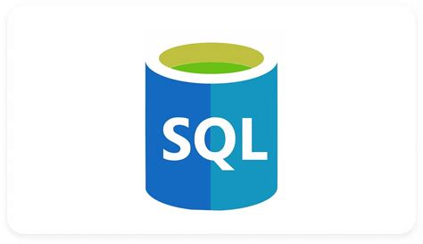

SQL:

SQL é basicamente uma linguagem de programação de banco de dados, essa linguagem consulta e manipula dados, diferente do Java ou Python, o SQL é exclusivamente para trabalhar com banco de dados e bem com o SQL ele é usado normalmente em: Qualquer sistema que armazena dados, data
science e análise de dados e até em administração de banco de dados.